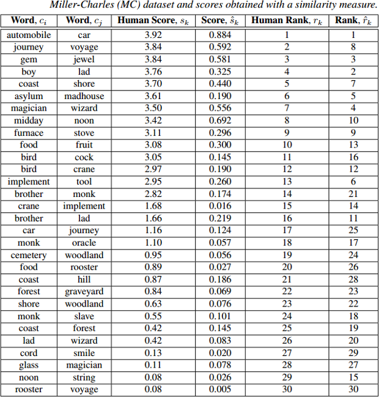
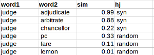
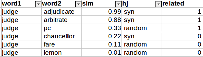

Task Description
There are two fairly similar tasks: the relatedness task and the association task. Each shared task is described below. Each task has two independent evaluation datasets.
1. The Relatedness Task
The goal of this task is to find semantically related words. Words are considered to be related if they are synonyms, hypernyms or hyponyms. For instance:
- авиация, авиа, syn
- абориген, индеец, hypo
- бизнесмен, владелец, hyper
You can find definitions of these semantic relation types here: http://en.wiktionary.org/wiki/Wiktionary:Semantic_relations.
Quality of a semantic similarity measure in this task will be assessed based on two criteria. The first benchmark is based on human judgments about semantic similarity (a translated version of the widely used MC, RG, and WordSim353 datasets). The second benchmark follows the structure of the BLESS dataset (see also Baroni and Lenchi (2011)). This benchmark is derived from the RuThes Lite thesaurus. More details about each benchmark are provided below.
1.1 Evaluation based on Correlation with Human Judgments
This benchmark quantifies how well a system predicts a similarity score of a word pair. This is the most common way to assess a semantic similarity measure and is used by many researchers.
Input (what we provide you): a list of word pairs in an UTF-8 encoded CSV file in the following format:
word1,word2\n
Output (what you provide us): similarity score between each pair in the range [0;1] in an UTF-8 encoded CSV file in the following format:
word1,word2,sim\n
Evaluation metric: Spearman’s rank correlation coefficient (rho) between a vector of human judgments "Human Score" and your similarity scores "sim" (denoted as "Score" on the figure below). The following figure shows you an example of such an evaluation dataset. This is the Miller-Charles dataset.

Figure below presents a visualization of Spearman's rank correlation of human judgements and similarity scores. In this case, Spearman's rank correlation of a similarity measure on this benchmark is 0.843 (p<0.001), whereas correlation of a random measure is 0.173 (p=0.360).

You can download a sample from the testing dataset composed of 66 pairs (see also the table below). Please keep in mind that this is not a training dataset. The goal is just to show you the format of the test data.
word1 word2 sim
петух петушок 0.952381
побережье берег 0.904762
тип вид 0.851852
миля километр 0.791667
чашка посуда 0.761905
птица петух 0.714286
война войска 0.666667
улица квартал 0.666667
. . .
доброволец девиз 0.090909
аккорд улыбка 0.087719
энергия кризис 0.083333
бедствие площадь 0.047619
производство экипаж 0.047619
мальчик мудрец 0.041667
прибыль предупреждение 0.041667
напиток машина 0
сахар подход 0
лес погост 0
практика учреждение 01.2 Evaluation based on Semantic Relation Classification
This benchmark quantifies how well a system can distinguish related word pairs from unrelated ones.
Input (what we provide you): a list of word pairs in an UTF-8 encoded CSV file in the following format:
word1,word2\n
Output (what you provide us): similarity score between each pair in the range [0;1] in an UTF-8 encoded CSV file in the following format:
word1,word2,sim\n
Evaluation metric: Average Precision (area under the Precision-Recall curve). Additionally we will calculate Accuracy and AUC under the ROC curve, but the official metric will be the Average Precision.
In this benchmark, similarity scores are used to distinguish semantically related pairs of words from semantically unrelated pairs. Each word in the test collection has 50% of related and 50% of unrelated terms. For instance:

As each word has precisely half related and half unrelated words, one can classify pairs given the scores as following:
- Sort the table by “word1” and “sim”.
- Set to 1 the “related” label of the first 50% relations of “word1”.
- Set to 0 the “related” label of the last 50% relations of “word1”.
For instance:

One the "related" column is calculated, it is straighforward to calculate Accuracy and AUC of a similarity measure.
1.3 Training Data
Sample of human judgements about semantic similarity: hj-sample.csv.
The judgemens were obtained via a crowdsourcing procedure. The judgemens are provided in an UTF-8 encoded CSV file in the following format:
word1,word2,sim\n
Here sim is semantic similarity of words. This is the mean score on the scale {0,1,2,3} over all human judgements. Annotation instruction can be found here: annotate.txt.
Semantic relations between words: rt-train.csv.
These relations were sampled from the RuThes Lite thesaurus. Therefore, you cannot use this thesaurus in this track. The relations are provided in an UTF-8 encoded CSV file in the following format:
word1,word2,sim\n
Here sim is the type of a relation. It can be one of the following:
- syn — synonyms
- hyper — hyperonyms
- hypo — hyponyms
Negative training samples: Please note that these training data contain no negative training samples. In order to obtain negative examples of a given word you can use relations of other words or another strategy. A limited number of negative training samples will only be available in the test set.
2. The Association Task
In this task, two words are considered similar if the second is an association of the first one. Association here is understood as the "free association" of a person on an input word called "stimulus". We use results of two large-scale Russian associative experiments in order to build training and test collections: Russian Associative Thesaurus (an offline experiment) and Sociation.org (an online experiment).
The goal of this task is to find cognitive associations of an input word. In an associative experiment respondents are asked to provide an association to an input word. This is normally the first thing that comes to mind of a person, e.g.:
- время, деньги, 14
- россия, страна, 23
- рыба, жареная, 35
- женщина, мужчина, 71
- песня, веселая, 33
The association task is based on the Russian associative experiment data. Therefore, type of a semantic relation here is not constrained. A relation can be of any type: synonyms, hyponyms, homonyms, etc.
Quality of a similarity measure in this task will be assessed via "Evaluation based on Semantic Relation Classification" similarly to the relatedness task (see the Section 1.2 for more details). Therefore, you will be given pairs of words. In other words, you are not asked to generate a set of associations for an input word in this task. You are rather asked to calculate similarities between word pairs as in all other tasks of RUSSE.
2.2 Training Data
Associations between words: ae-train.csv
These relations were sampled from the Russian Associative Thesaurus . Therefore, you cannot use this thesaurus in this track. The relations are provided in an UTF-8 encoded CSV file in the following format:
word1,word2,sim\n
Here sim is the number of responses. For instance, the line "время,деньги,14" means that 14 people provided the reaction "деньги" on the stimulus "время".
Associations between words: ae2-train.csv
These relations were sampled from the Sociation.org database. Therefore, you cannot use this resource in this track. The relations are provided in an UTF-8 encoded CSV file in the following format:
word1,word2,sim,dir,rev\n
Here dir and rev is the number of direct (word1 -> word2) and reverse (word2 -> word1) responses. The sim column contains similarity of words calculated as following: sim = (dir + rev)/2 * (min(dir+2, rev+2)/max(dir+2, rev+2)) .
Negative training samples: Please note that the training data contain no negative training samples. In order to obtain negative examples of a given word you can use relations of other words or another strategy. A limited number of negative training samples will only be available in the test set.
Please, note that there will be two separate evaluations in the associatin task: one for the Russian Associative Thesaurus and another for the Sociation.org data.3. Submission Format
You will be provided with a list of word pairs in the format
word1,word2\n
We are going to provide about 15,000 word pairs for testing. You should quickly (during several days) calculate semantic similarity scores between them. Each score should be in the range [0;1]. You should send the results to us in the format
word1,word2,sim
All aforementioned performance metrics for both relatedness and association tasks (spearman correlation, accuracy, auc) are calculated based on this input. You are allowed to submit up to three different results per task.
You are allowed to use any tool and resource in order to build a semantic similarity measure except for the RuThes Lite thesaurus and the Russian Associative Thesaurus. Some data you can start from are listed below.
5. Additional Resources
We collected here pointers to some additional resources that you may find useful for building your semantic similarity measure.
Russian Wikipedia. This corpus is a common choice for training semantic similarity systems.
- Text version of the Wikipedia cleaned from Wiki markup (UTF-8).
- POS tagged version of the Wikipedia (UTF-8) in the following format: "surface lemma part-of-speech"
Wikipedia co-occurrence scores. The file is in the format “word1,word2,num”. Here “num” is the number of times “word1” and “word2” co-occurred within Wikipedia articles.
RuWaC. A web-based corpus. An advantage of this corpus is that it is already syntactically parsed with MaltParser.
Baseline systems:
- JWTKL
- Word2Vec
- SemanticVectors
- AirHead Reseach and S-Space
- GenSim
- Serelex. See the “API” section.
- DISSECT
- UBY. UBY is available in English and German only, but it contains many translations into Russian from different sources.
- GloVe
- DependencyVectors (DV)
Some other userful NLP tools:
- PyMystem3 — a Python wrapper around Yandex Mystem.
- TreeTagger and MaltParser for Russian.
- Lucene text search library.